About the Project
Swampocalypse VR is an immersive airboat experience designed to raise environmental awareness about the Florida Everglades. By integrating a Meta Quest headset with a 6-DOF physical motion simulator (Qubic QS-S25), we created a highly visceral journey where players battle mutant invasive species and restore the ecosystem.

The Challenge: Solving Spacial Computing Friction
I joined the team mid-development to rescue an experience that was struggling with severe spatial UX and comfort issues. Early playtests revealed that simply bringing 2D UI paradigms into a 6-DOF motion-simulated VR environment caused critical friction.
My Approach: Rapid Prototyping & Cross-Functional Collaboration
As the bridge between design and engineering, I redesigned the core interactive loops and collaborated closely with the engineering team to rapidly implement, debug, and iterate on solutions.
Challenge 1 — Cognitive Overload & Skipped Onboarding
Players ignored floating 2D pop-ups and voiceovers, failing to learn basic locomotion. They skipped the tutorial entirely, leading to confusion and frustration ("How do I move?").
I redesigned the onboarding flow with karaoke-style highlighted subtitles and a physical "Shoot to Continue" interactive button — requiring active player engagement and guaranteeing they understood the core mechanics before the game started.

Challenge 2 — Cluttered FOV (Field of View)
Screen-space UI blocked the player's spatial awareness, breaking immersion. The existing 2D UI was visually appealing but obscured the majority of the player's field of view.
I conceptualized moving the intrusive floating UI into the diegetic space. We created a virtual monitor inside the airboat cockpit, allowing players to naturally look down to check their stats and information — maximizing the immersive spatial view.
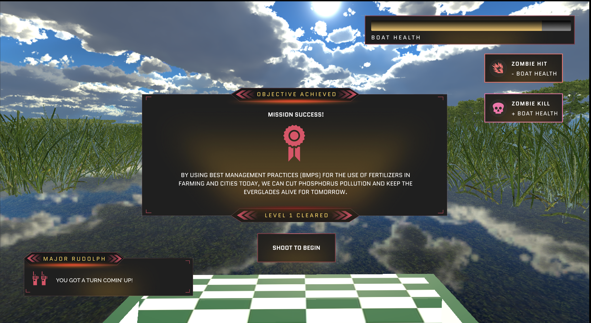
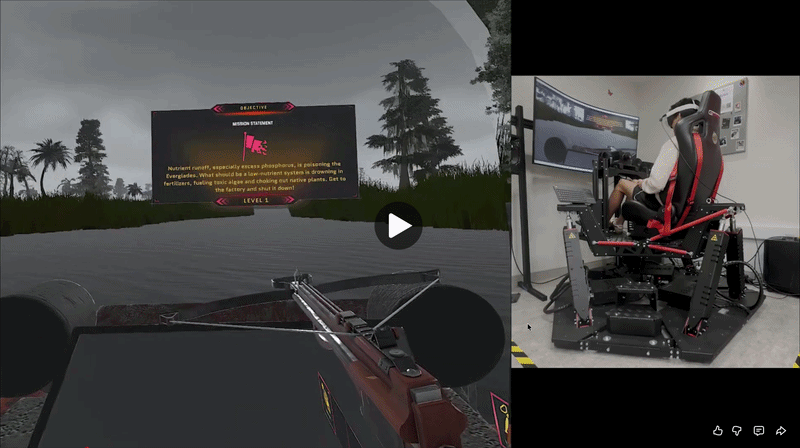
Challenge 3 — VR Motion Sickness
A mismatch between the physical Qubic QS-S25 rig movements and visual acceleration caused severe discomfort. Players experienced nausea during amplified head rotations.
Led internal calibration sessions to fine-tune the Qubic motion rig's responsiveness. Iterated on the airboat's virtual speed and camera motion based on qualitative feedback, successfully bridging the sensory gap.
Research-Backed Comfort Mechanics: Inspired by existing research on VR locomotion, I conceptualized a dynamic vignetting effect triggered during amplified head rotations. Collaborated with the engineering team to implement it, which successfully reduced nausea and received overwhelmingly positive user feedback.
Assessing Vignetting as a Means to Reduce VR Sickness During Amplified Head Rotations — N Norouzi

Challenge 4 — Spatial Wayfinding
Players easily lost their sense of direction in the homogenous 360° swamp environment, frequently getting lost in the vast levels.
I integrated environmental signposting (e.g., in-world signs and spatial UI markers). These served as clear visual landmarks, intuitively guiding players through the levels and toward the destination without breaking immersion.
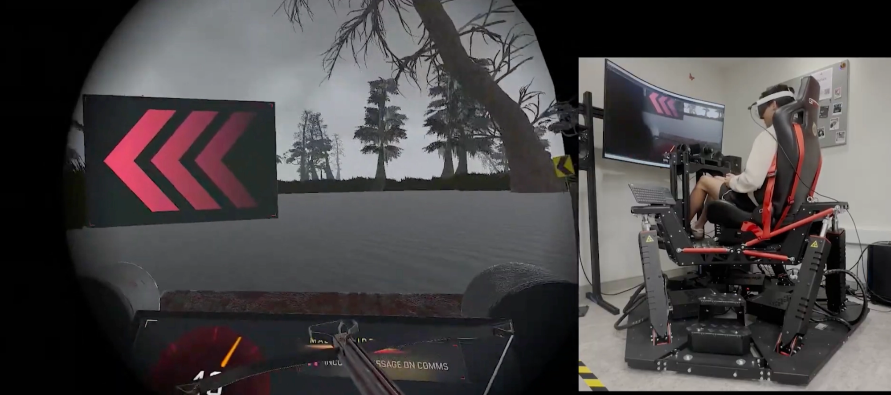
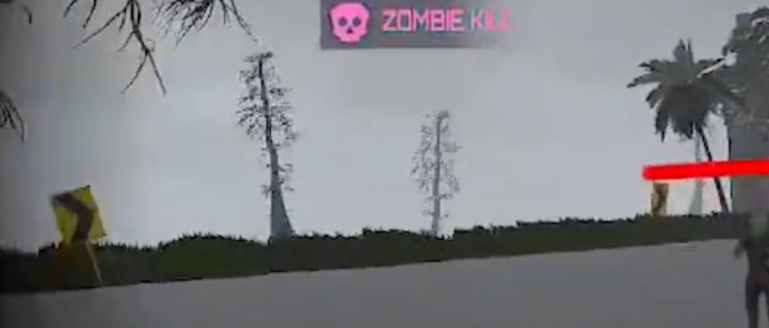
Translating Narrative into Interactive Mechanics
As the Creative Director, I designed core gameplay mechanics to ensure the environmental message ("Eco-Repair") was felt through actions, not just words:
Implemented a behavioral loop where shooting native wildlife (e.g., alligators) triggers a temporary 'freeze' penalty and an NPC warning message. This trains players to consciously identify targets.
When shot, specific plant assets scatter seeds throughout the environment — a direct interactive metaphor for restoring the ecosystem.
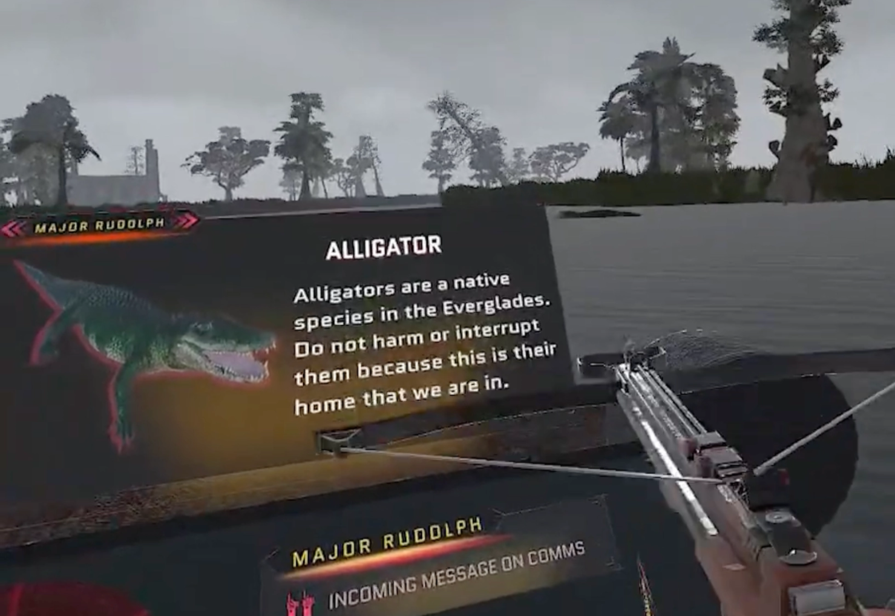
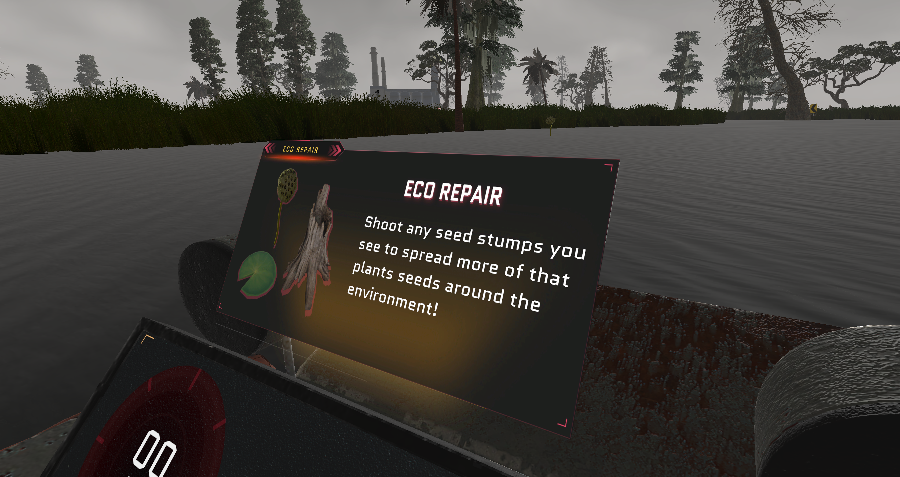
Challenge 5 — Lack of Visual Pacing
Homogenous environments with no clear progression. Every level looked the same, making the experience feel monotonous and directionless.
Completely revamped the dull, homogenous scenes into distinct, emotionally driven levels with clear visual pacing and progression.
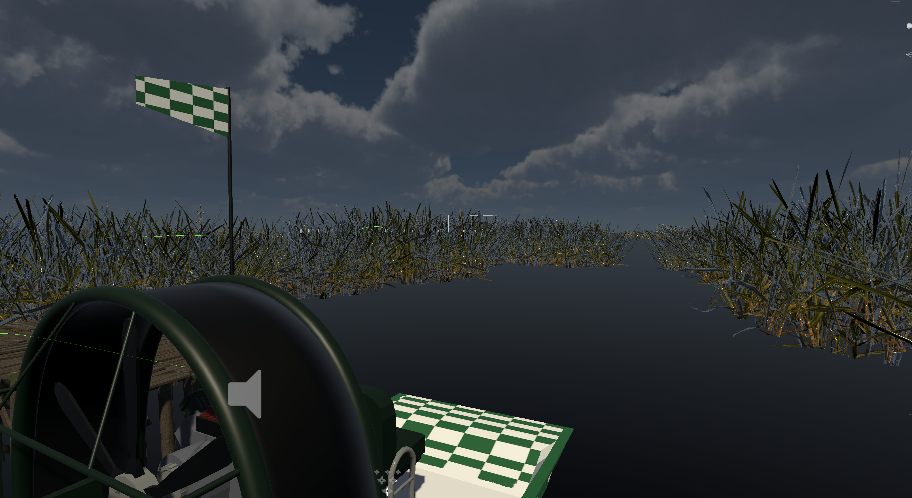
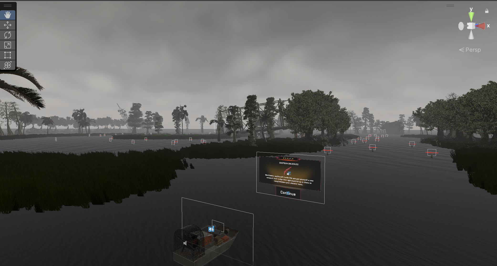
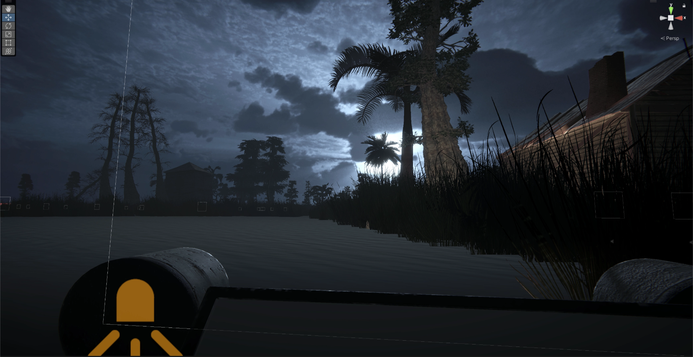
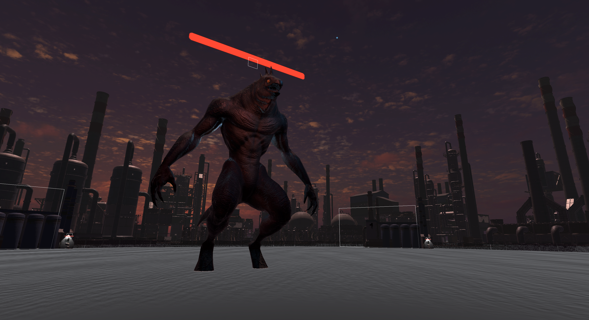
Playtesting & User Research
Designed and executed a multi-stage playtesting pipeline: Internal Calibration → Closed-group tests → Public sessions. Metrics tracked included Presence/Immersion, Engagement (mission completion rates), and Comfort.
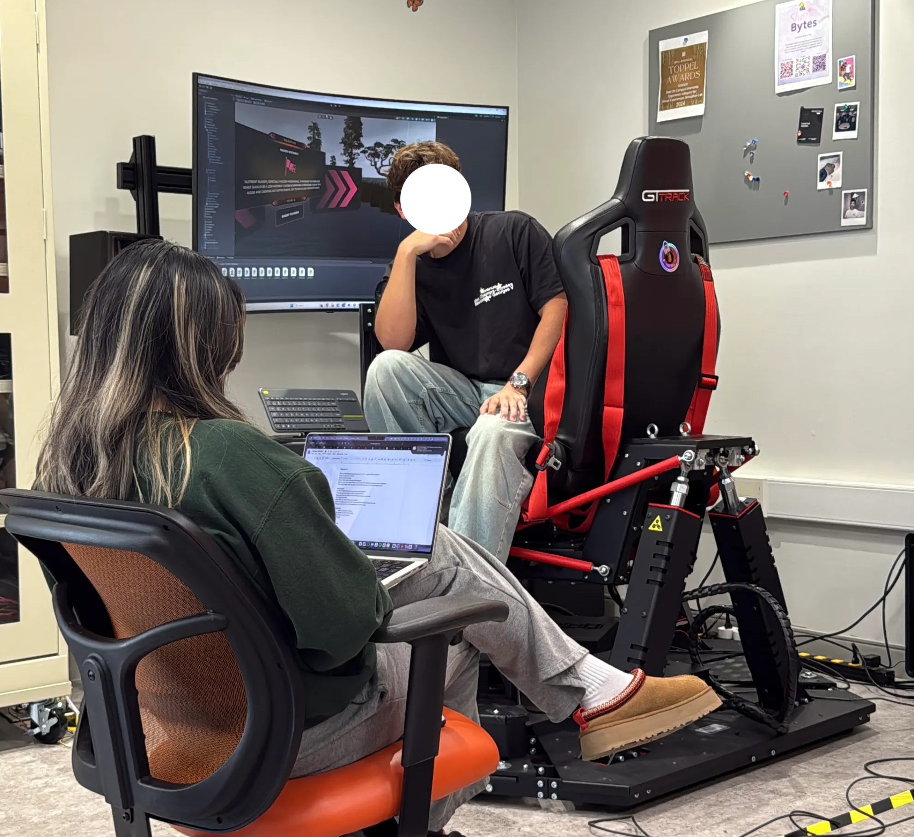